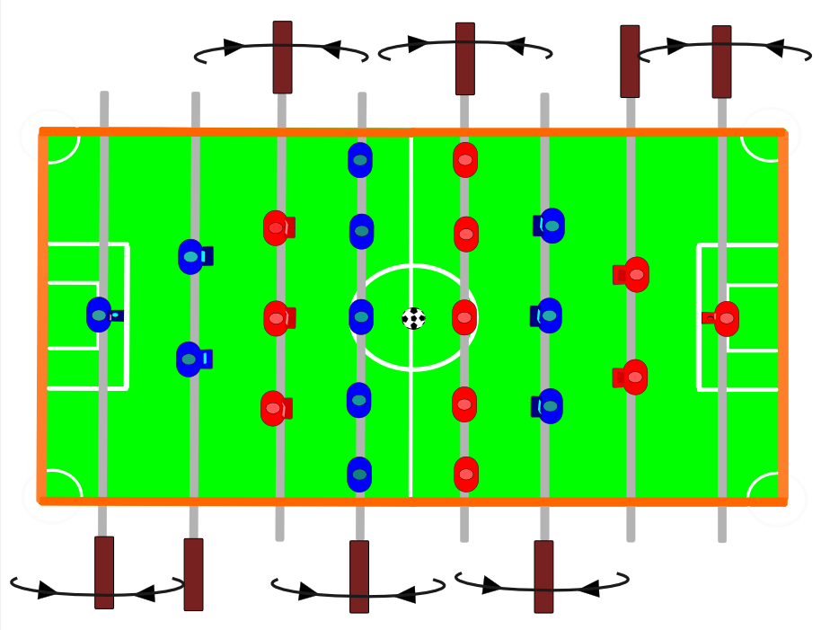
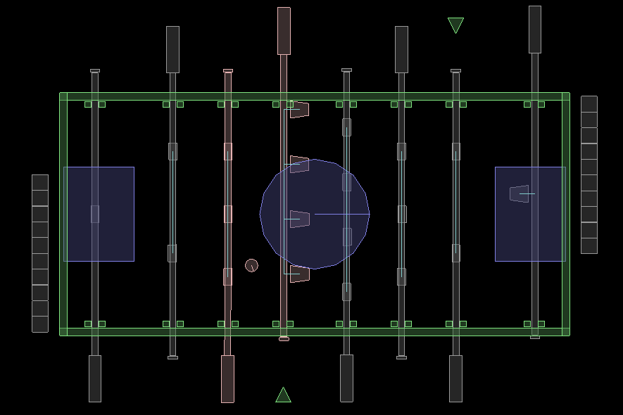
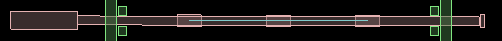
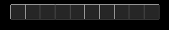

Introduction
This report explains in detail the project we created- a foosball table- in Box2d. We describe in brief the bodies,fixtures and constraints we used to create this simulation.
Here is the initial model of our simulation:
foosball

Design
Overall
Foosball_Simulation

- We simulated the game of foosball using a bounding table, rods and rigid bodies representing players attached to each rod. Whenever the ball enters one of the goals situated at either end, a score variable is updated and this is shown by moving one of the relevant score blocks present on either side of the table. The first team to ten goals is the winner.
- The simulation consists of a ball which moves around on the frictionless table colliding with everything it comes in contact with.
- There are (transparent) rods at relevant locations on the table, constrained to move upto a certain limit in the upward or downward direction. The players attached to each rod can be moved towards either the left or right upto a certain limit. The user also has the option to turn the rod enough to lift all its players off the table.We used the b2PrismaticJoint to simulate motion of these players.
- The simulation is heavily dependent on user input. We implemented this overloading the keyboard() function of the base_sim_t class of Box2D.
Challenges and changes from original plan
- It was a challenge for us to implement the constraints required by the nature of the game, and we think that usage of prismatic joints and using the filter attributes of Box2D objects to cater to all aspects of motion of the players has made our design more efficient. We also feel that using static objects to constrain the motion of the rods (as explained later) was a simple yet effective feature.
- We tried to use prismatic joints to restrict the motion of the rods as well. However, this made the motion considerably inefficient and we finally decided to not do so.
- We changed players on the middle rod from five on the initial design to four. We also reduced the size of players. This was necessary to have enough space on the table for the ball to move around freely
- We also had to experiment with the density and restitution of the various bodies before deciding a final value to make the simulation seem as realistic as possible.
Parts of the simulation
Table
The entire game is played within the confines of the table, which serves to restrict the motion of the ball and rods. This was implemented using four box shapes.
Rods
Rod

- Rods are thin dynamic Box objects located at appropriate locations on the table. Two pairs of small static bodies named constr are located on either side of the rod at the point where it enters and leaves the table to constrain its motion in the y direction.
- These are non-transparent however, and have filter.maskBits set to collide only with the constr bodies.
- At any given point, only one rod per team is active. The user can change the active rod by giving a keyboard input.This is indicated by a pointer.
Pointer
- Each rod contains one anchor of a prismatic joint, the other end of which is connected to a Player body.
Player
Player
- A player is a small,rigid and dynamic body which is attached to a rod via a prismatic joint. All players on the current active rod can be move right or left(upto a certain limit) by a keyboard input.Such a rotation has greater impact if it happens from a start position far away from the final position of the player.
- The user can also lift the players of a rod off the table (meaning that the ball can pass underneath them) by pressing the right motion key while the players are at the maximum right position, and similarly for the left. This can be viewed as a change in the shape(fixture) of the players.
- These are implemented by setting appropriate attributes on the prismatic joint and by setting the fixtures and filter bits of the players accordingly.
Ball
Ball
The ball is a b2Circle shaped bullet object with relatively low density. Throughout the simulation, the ball is being struck by/bouncing off players/table walls. Scores are updated when the ball enters either of the goals.
Score boxes
Scores

- These are ten boxes located on either side of the table that represent the score.
- A dominos_t::check() function is continuously called by the base_sim_t::step() function that checks whether a goal has been scored. If so, the appropriate box is pushed towards the appropriate side.
- If the score of any team reaches ten or more, the game is restarted and the boxes are moved to their appropriate location.
Conclusion
We have hence created a self contained two player foosball game using keyboard inputs and Box2D simulation
We have used the techniques learnt in earlier labs to make the code efficient and document it.